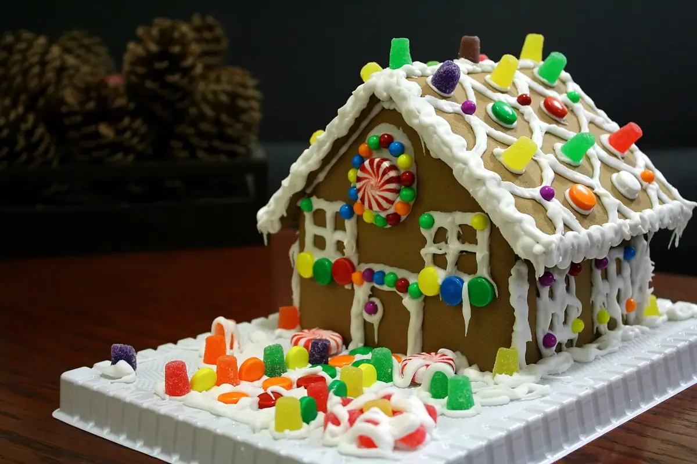
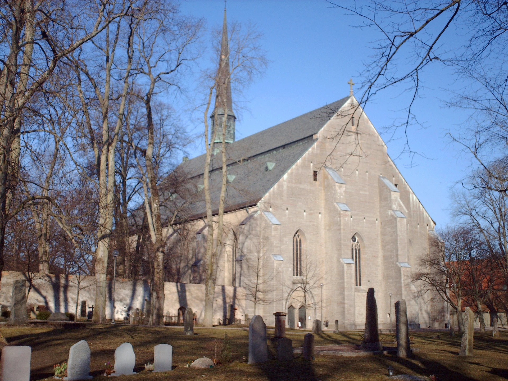
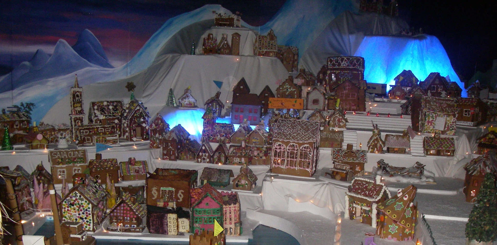
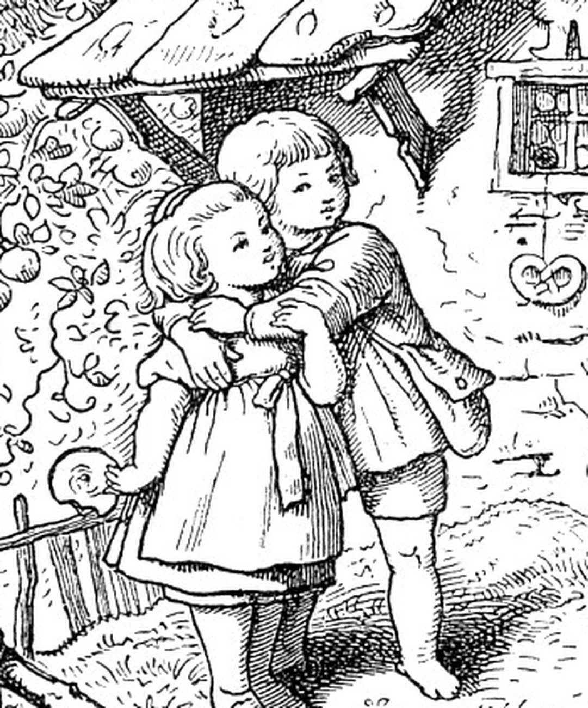

아직 펼치지 않은 카드성탄 밤의 식탁 · 3생강빵 집과자로 지은 이 집은 「헨젤과 그레텔」 때문에 생겼을까요, 아니면 그 전부터 있었을까요?과자로 집을 지었어! 언제부터 만들었을까?
1812년 · 사흘째 한낮독일 옛이야기 속 숲 · 수녀원 부엌에서 오늘의 생강빵 마을까지
생강빵 집
숲에서 길을 잃은 남매가 사흘째 한낮에 만난 작은 집. 그림 형제는 그 집이 빵과 케이크와 설탕으로 되어 있었다고 적었어요. 화가 리히터가 그린 그 집을 구석구석 찾아보고, 생강빵이 걸어온 길도 따라가 봐요.
숲속에서 과자로 지은 집을 만났대! 지붕은 케이크, 창문은 설탕이래. 그림 속에서 맛있는 것들을 찾아볼까?
검수 전 시안이에요(기준서 1판). 과자 집은 그림 형제의 첫판(1812)을, 생강빵의 역사는 박물관·도시·의학 학술지 자료를 따랐어요. 판화 속 과자 가운데 그림 형제의 글에 없는 것은 그렇다고 밝혔어요. 상상은 ‘눈 감고 상상해 보기’에만 썼어요.
시안 확인용카드 단계 미리 보기
1
수녀원의 약, 1444년
스웨덴 바드스테나에는 중세 수녀원이 있었어요. 사진은 그 수녀원의 성당이에요.
노르웨이 의사협회 학술지는, 1444년 이곳 수녀들이 배앓이를 달래려고 생강 과자를 구웠다는 기록이 있다고 적어요.

옛날에는 생강 과자를 약방에서 팔기도 했어요. 덴마크의 한스 왕(1455~1513)은 궁정 의사의 처방으로, 코펜하겐 약방에서 생강 과자를 킬로그램 단위로 받았다고 해요.
옛날 스웨덴 수녀님들은 배가 아플 때 먹으려고 생강 과자를 구웠대.
물어보기배가 아플 때 먹는 과자라니, 어떤 맛일 것 같아?
2
뉘른베르크의 생강빵 장인
독일 뉘른베르크에는 1395년부터 생강빵(레프쿠헨) 빵집이 있었다는 기록이 있어요. 1643년, 시는 생강빵 장인들이 따로 조합을 만들도록 허락했어요.
생강빵은 꿀로 달게 하고 귀한 향신료를 넣었어요. 반죽도 구운 빵도 오래 두고 먹을 수 있어서, 장터에서 사고파는 물건이 되었어요.

장인들은 나무판에 그림을 새긴 틀로 반죽에 무늬를 찍었어요. 늦어도 15세기부터 생강빵을 틀에 찍거나 잘라 만들었고, 사람 모양 생강빵도 오래전부터 있었어요. 사진은 독일 브레텐 박물관의 18세기 생강빵 틀이에요.
나무판에 사람 모양을 새긴 과자 틀이야. 반죽을 꾹 누르면 그림이 찍혀!
물어보기너라면 과자 틀에 무엇을 새기고 싶어?
3
숲속의 과자 집
1812년 그림 형제가 펴낸 옛이야기 책 첫판. 숲에서 길을 잃은 남매는 사흘째 되는 날 한낮에 작은 집 하나를 만나요.
판화 속 작은 것들을 하나씩 눌러 찾아보세요.

루트비히 리히터 그림, 「마녀의 집 앞의 헨젤과 그레텔」, 판화(만든 해 모름) · 그림: 루트비히 리히터(Ludwig Richter) · 퍼블릭 도메인 · 위키미디어 공용
그림 위의 숫자나 아래 번호를 눌러 보세요.
다 찾았어요. 그림 형제의 빵과 케이크와 설탕에, 리히터가 과자를 더 매달았어요.
“그 집은 온통 빵으로 지었고 케이크로 지붕을 덮었으며, 창문은 맑은 설탕이었다.”
그림 형제, 『어린이와 가정의 옛이야기』 첫판(1812) 15번 「헨젤과 그레텔」 · 이 안내서가 우리말로 옮김
그림 형제의 글에는 빵과 케이크와 설탕만 나와요. 드레스덴의 화가 루트비히 리히터(1803~1884)는 그 집을 더 많은 과자로 꾸며 그렸어요. 판화 속을 하나씩 눌러 찾아보세요.
헨젤은 지붕을, 그레텔은 창문을 떼어 먹었어요. 너라면 과자 집의 어디부터 먹을까요?
숲속에서 빵으로 지은 집을 만났어! 지붕은 케이크, 창문은 설탕이래.
물어보기과자 집에서 제일 먼저 떼어 먹고 싶은 곳은 어디야?
4
무대 위의 집, 온 마을이 짓는 집
1893년 12월 23일, 성탄을 앞두고 독일 바이마르에서 훔퍼딩크의 오페라 「헨젤과 그레텔」이 처음 무대에 올랐어요. 작곡가의 누이가 자기 아이들이 부를 노래 몇 곡을 부탁한 데서 시작된 작품이에요.
노르웨이 베르겐에서는 1991년부터 해마다 유치원생과 학생, 회사와 수많은 자원봉사자가 생강빵으로 마을을 지어요. 작은 집부터 동네의 이름난 건물, 기차와 배까지 지어요.

1812년 첫판의 숲속, 사흘째 한낮에 그 집에 닿은 것은 길 잃은 두 아이였어요.
노르웨이 베르겐에서는 아이들이랑 어른들이 생강빵으로 마을을 지어! 집도 있고 배도 있고 기차도 있어.
물어보기우리 동네를 생강빵으로 짓는다면 무엇부터 만들까?
눈 감고 상상해 보기
숲 냄새 사이로 달콤한 냄새가 스며요. 나무 사이에 작은 집이 보여요. 햇빛에 반짝이는 설탕 창, 꿀빛으로 구워진 벽, 처마 끝에 매달린 브레첼. 손을 뻗으면 바삭, 지붕 한 조각이 떨어질 것만 같아요.
눈을 감아 봐. 깊은 숲속, 달콤한 냄새가 나. 나무 사이에 과자 집이 반짝! 설탕 창문을 톡톡 두드려 볼까?
나의 자리
길을 잃고 사흘째 되던 한낮, 빵으로 지은 집을 만난 남매에게 그 집은 어떤 집이었을까요?
길을 잃고 사흘째, 과자 집을 본 남매는 맨 처음 무슨 말을 했을까?
마음에 닿는 한 줄을 고르거나 직접 써 보세요. 한 줄을 남기면 이 자리의 도장이 찍혀요. 이 기기에만 저장돼요.
더 깊이
이야기를 보다 궁금해질 만한 것들이에요. 답을 읽거나 짧은 영화로 보세요.

남매는 왜 숲에서 길을 잃었어요?
헨젤과 그레텔은 어쩌다 성탄 이야기가 됐어요?
뒷이야기
아직 펼치지 않은 이야기예요. 누르면 이야기가 펼쳐지고 색이 돌아와요. 더 알고 싶으면 근거를 따라가 보세요.
다 펼치면, 다음에 오실 때 새 이야기가 찾아와요.
오늘의 뒷이야기는 여기까지예요. 다음에 오시면 새 이야기가 기다리고 있어요.
펼친 뒷이야기 · 누르면 다시 볼 수 있어요
더 찾아보기
기록마다 다른 점
하얀 새 1812년 첫판에서 남매는 사흘째 한낮에 그 집에 닿아요. 1857년 판에서는 눈처럼 하얀 새가 노래하며 남매를 그 집까지 이끌어요.
수도원에서 시작됐을까 생강빵이 중세 수도원에서 시작됐다는 말이 흔해요. 하지만 독일 디지털 도서관의 글은 레프쿠헨을 중세 수도사들이 처음 만든 것은 결코 아니라고 해요.
오페라의 엄마 그림 형제의 이야기에서 남매는 숲에 남겨지지만, 훔퍼딩크의 오페라에서는 엄마가 딸기를 따 오라며 아이들을 숲에 보낼 뿐이에요.
직접 가 보기
확인한 날 · 2026년 11월 18일 · 바뀌기 쉬운 정보라 정기적으로 다시 확인해요
베르겐의 생강빵 마을(페페르카케뷔엔)은 해마다 11월 중순부터 12월까지 열려요. 남은 돈은 도움이 필요한 아이들을 돕는 단체에 보내요. 여는 곳과 시간은 해마다 바뀔 수 있으니 미리 확인해 주세요.
뉘른베르크에서는 지금도 시내에서 구운 레프쿠헨만 ‘뉘른베르크 레프쿠헨’이라는 이름을 달아요. 1996년부터 유럽연합의 지리적 표시로 보호받아요.
과자 집 구석구석 금박
판화 속 일곱 곳을 모두 찾아 읽으면 카드에 금박이 입혀져요.
판화 속 일곱 곳을 모두 찾아 읽기
어디부터 먹을까 채색
둘 가운데 하나만 해도 카드가 채색돼요.
헨젤과 그레텔처럼, 과자 집의 어디부터 먹을지 고르기
아이와 함께 ‘영화처럼 보기’를 끝까지 보기
근거 보기 (17)
- 그림 형제, 「헨젤과 그레텔」(1812년 첫판, 위키문헌) — 사흘째 한낮, 빵으로 짓고 케이크로 덮고 맑은 설탕 창, 지붕과 창을 먹음
- D. L. 애슐리먼, 「헨젤과 그레텔」 1812년판과 1857년판 비교(피츠버그 대학) — 1857년판의 하얀 새, 마녀의 말
- 브리태니커 「John」(덴마크·노르웨이·스웨덴의 왕, 덴마크 이름 한스) — 1455년 덴마크에서 태어나 1513년 올보르에서 죽음, 덴마크 왕 1481~1513
- 노르웨이 의사협회 학술지, 아레 브레안 「성탄의 건강식」(2022.12.12) — 1444년 바드스테나 수녀들의 생강 과자, 약방, 한스 왕
- 뉘른베르크시 유럽 사무소: 뉘른베르크 레프쿠헨 — 1395년 기록, 1643년 조합 허락, 1996년 지리적 표시
- 독일 디지털 도서관, 테레자 로데발트 「레프쿠헨: 축제, 꿀 따기, 무역길」(2021.12.14) — 꿀과 향신료, 장터 상품, 나무틀, 사람 모양 생강빵, 수도원 기원설
- 위키미디어 공용: 브레텐 시립박물관 생강빵 틀(18세기) 파일 정보 — 1689년 큰불 뒤 생강빵 고장이 된 브레텐
- 위키미디어 공용: 『리히터 사진 화첩』 3523번 파일 정보 — 숲의 마녀와 고양이, 그림 아래의 마녀의 말
- 도이체 비오그라피: 루트비히 리히터 — 1803 드레스덴 ~ 1884 드레스덴, 화가·목판화 밑그림 화가
- 브리태니커 「Hänsel and Gretel」(오페라) — 1893년 12월 23일 바이마르 초연, 누이 아델하이트 베테의 부탁, 딸기 따기
- 노르웨이 관광청: 세계에서 가장 큰 생강빵 마을 — 1991년부터, 유치원·학교·회사·자원봉사자, 11월 중순~12월, 수익은 아이들을 돕는 단체로
- 스미스소니언 매거진 「생강빵 집의 성탄답지 않은 기원」 — 1600년대부터(음식 역사가 토리 에이비), 그림 형제 때 이미 오래된 풍습, 이야기가 널리 퍼뜨림
- 그림 형제 「헨젤과 그레텔」 1857년 판 본문(프로젝트 구텐베르크-DE) — 빵으로 지은 집, 하나님을 부르는 말, 하얀 오리
- 에방겔리슈(독일 개신교 누리집), 랄프 지프만(2010.12.14) — ‘세계 무대의 성탄 오페라’, 해마다 성탄 무렵 공연, 두 딸을 위한 노래, 슈트라우스의 편지
- 아델하이트 베테 대본 「헨젤과 그레텔」(1905년 판, 프로젝트 구텐베르크) — 저녁 기도와 천사 열넷, 생강빵 아이들
- 메트로폴리탄 오페라 「라디오의 정신」 — 1931년 12월 25일 첫 라디오 방송
- 디지털 독일어 사전(DWDS) ‘knuspern’ — 소리 내어 갉아 먹다
그림·사진·소리 출처
- 사진: Artifex · 퍼블릭 도메인 · 위키미디어 공용
- 사진: Museum im Schweizer Hof Bretten – Linda Obhof · CC BY 4.0 · 위키미디어 공용
- 그림: 루트비히 리히터(Ludwig Richter) · 퍼블릭 도메인 · 위키미디어 공용
- 그림: 루트비히 리히터 · 퍼블릭 도메인 · 위키미디어 공용
- 사진: Marius Vassnes · CC BY-SA 4.0 · 위키미디어 공용
- 그림: 루트비히 리히터(Ludwig Richter) · 퍼블릭 도메인 · 위키미디어 공용
- 그림: 루트비히 리히터(Ludwig Richter) · 퍼블릭 도메인 · 위키미디어 공용
- 그림: 루트비히 리히터(Ludwig Richter) · 퍼블릭 도메인 · 위키미디어 공용
- 그림: 루트비히 리히터(Ludwig Richter) · 퍼블릭 도메인 · 위키미디어 공용
- 그림: 루트비히 리히터(Ludwig Richter) · 퍼블릭 도메인 · 위키미디어 공용
- 그림: 루트비히 리히터(Ludwig Richter) · 퍼블릭 도메인 · 위키미디어 공용
- 사진: Museum im Schweizer Hof Bretten – Linda Obhof · CC BY 4.0 · 위키미디어 공용(부분을 잘라 씀)
- 사진: Museum im Schweizer Hof Bretten – Linda Obhof · CC BY 4.0 · 위키미디어 공용(부분을 잘라 씀)
- 사진: Marit & Toomas Hinnosaar · CC BY 2.0 · 위키미디어 공용
‘처음 만나는 기독교 문화’의 깊은 카드예요. 카드 단계와 남긴 글은 이 기기에만 저장돼요.